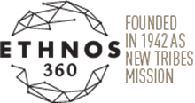

About Ethnos 360

In 2,500 of the world’s 6,500 people groups, there is no church, nor is there any work being done to establish a church. These are the people among whom Ethnos 360 works.
These tribes’ cultures and languages have isolated them from the Gospel. Missionaries must learn their language and understand their culture in order to clearly present the Gospel and effectively plant a church.
Unreached people groups have no concept of the God of the Bible. So Bible teaching begins at the same place God began with His chosen people: at the beginning. Chronological Bible teaching presents a foundation for understanding Jesus’ death and resurrection.
Following the pattern seen in Acts as God’s people carried out the Great Commission, missionaries seek to establish mature churches that can take their rightful place as agents of change in their own communities and partners in the Great Commission. Learn more here
About the name change:
Have you noticed New Tribes Mission has changed their name to Ethnos 360? Find out why here: https://ethnos360.org/about
Learn More: The Beginnings Where We're Headed Internship Ethnos 360
Information taken from the Ethnos 360 website